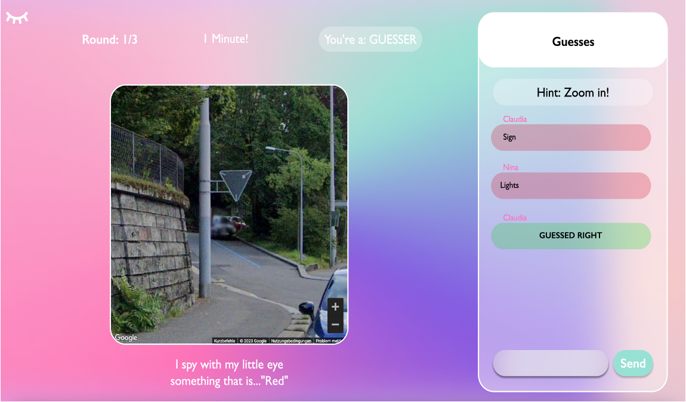

I spy with my little eye
This group project was part of the University of Zurich's "Sopra" course.
The goal was to bring the classic guessing game online, using the Google Maps API to connect friends and family while discovering the world.
The backend was built using Java and the Spring Boot framework (GitHub repo), while the frontend was developed with JavaScript and React (GitHub repo). I mainly contributed to the backend.
The website was deployed in the summer of 2023 on Google App Engine, with the project remaining online as long as student credits allowed.
Gameplay
One Player creates a game and share the generated code with the other players. Everyone waits in the lobby, until the game is started.
When the game is started for each round a "Spier" is selected, which chooses a location in Google Street View, places an object, and provides a color for it.
The other players then have one minute to guess the object. Points are awarded based on speed, with incorrect guesses displayed for all players and correct guesses acknowledged.
The Spier can also provide hints.
After each round and when the game is over, a leaderboard is displayed showing who earned the most points.
Linguistic Ear
This website was developed as part of the Linguistic Web Application course at the University of Zurich during the Autumn Semester 2023 (link to course description) , in collaboration with a team of three.
The application is a quiz game where users must identify the language of a voice sample from multiple choices, with the option to seek hints for assistance.
The goal is to help users sharpen their intuition for distinguishing the unique sounds of various languages.
At the start of each game, users can customize the difficulty by selecting the number of questions and answer choices.
Additionally, users can explore detailed information about different languages, such as the number of native speakers, the language family, and the writing system.
The code is hosted in a private GitLab repository, and the database uses PostgreSQL with datasets sourced from the Mozilla Common Voice repository. The backend was built using Python and the Flask framework, while the frontend was developed with JavaScript and Vue.js.
VowelVision
This project, developed as part of my Bachelor thesis, introduces VowelVision, a web-based tool designed to help native English speakers improve their German vowel pronunciation through acoustic and articulatory feedback.
The tool utilizes voice cloning to generate a native-like audio version of the user’s speech in the target language. It analyzes the user’s vowel formants and compares them to those of the cloned voice, offering guidance on tongue positioning to achieve more accurate pronunciation.
The system is built with a Flask backend and a Vue.js frontend and is containerized with Docker for streamlined deployment. VowelVision currently supports 10 languages and has the potential to expand as additional language analysis tools become available. While further testing is required to assess its effectiveness, planned future improvements include real-time feedback to enhance the learning experience.
Users begin by selecting a target language and choosing a text segment to either record or upload.
Once a user submits their voice sample and clicks the “Run Analysis” button, the backend processes the data within one or two minutes.
When the analysis is complete, users can listen to the voice-cloned version of the text and view a scatter plot comparing their formants with those from the voice-cloned audio.
The FAQ page answers frequently asked questions, which users found more engaging than lengthy theoretical explanations on the earlier version of the website